MOSAIC Week 19 Assignment
linear algebra
Remember to hand in your work …
At any point, you can submit your answers by collecting them and uploading them to the class site.
No answers yet collected
If the answers that have been loaded automatically are not yours, press this button before starting your work:
Dynamics near a fixed point
Open the exercise
Exercise 1 You have been given f() and g() as the R implementation of a pair of functions \(f(x,y)\) and \(g(x,y)\) for the dynamical system \[\partial_t x \equiv f(x, y)\\\ \ \ \ \
\partial_t y \equiv g(x, y)\]
To get you started, here are the nullclines of the dynamical system:
There is a fixed point near \((x_\star \approx -2, y_\star \approx 1)\).
- Part 1
- Linearize the dynamics at that fixed point. Remember, the linear dynamics will be
\[\left(\begin{array}{c}\partial_t x\\\partial_t y \end{array}\right) \approx \underbrace{\left(\begin{array}{cc}\partial_x f(x_\star, y_\star) & \partial_y f(x_\star, y_\star)\\\partial_x g(x_\star, y_\star) & \partial_y g(x_\star, y_\star)\end{array}\right)}_{\text{matrix } \mathbf A} \left(\begin{array}{c}x - x_\star\\y - y_\star \end{array}\right)\] To construct matrix \(\mathbf A\), zoom in on the fixed point to find accurate values for \(x_\star\) and \(y_star\).Then, use statements like D(f(x,y) ~ x)(xstar, ystar) to find the numerical value of the corresponding coefficient in the matrix.
Copy your code here.
If you need to, do computations on the side to check things out!
More on-the-side computations if you need.
- Part 2
- Find the eigenvalues of the linearized dynamics. The simple command, once you have found matrix \(\mathbf A\), is under the “Eigenvalues” tab of the chunks above.
Interpret the eigenvalues in terms of the stability of the fixed point. Write your interpretation in the text box.
- Part 3
- Make a new matrix \({\mathbf B} = - {\mathbf A}\). Find the eigenvalues of this new matrix and interpret them in terms of the stability of the system \[\left(\begin{array}{c}\partial_t x\\\partial_t y\end{array}\right) \equiv {\large \mathbf B} \left(\begin{array}{c}x - x_\star\\y - y_\star \end{array}\right)\]
Interpret the resulting eigenvalues as regards stability. Keep in mind that negating \(\mathbf A\) is much like “making time go backward.”
- Part 4
- Again make a new matrix \(\mathbf B\), but this time only the \(x\) dynamics should be negated, the \(y\) dynamics should stay as they originally were. Will the \(x\)-negated dynamics have the same nullclines as the original system? Describe the stability of the fixed point with the \(x\)-negated dynamics.
- Part 5
-
Look up the documentation for
streamlines(). Usestreamlines()to plot out the flow for the original dynamical system.
This box connects to the “collect answers” button.
If you need to, do computations on the side to check things out!
More on-the-side computations if you need.
Drill
Exercise 2 We’re going to make some “random” dynamics. That is, we’ll construct the dynamical system
\[\partial_t x = f(x, y)\\ \ \ \ \ \ \partial_t y = g(x,y)\]
where \(f()\) and \(g()\) are random functions.
Figure 1 shows the nullclines for the flow and shows short trajectories from about 60 randomly selected initial conditions.
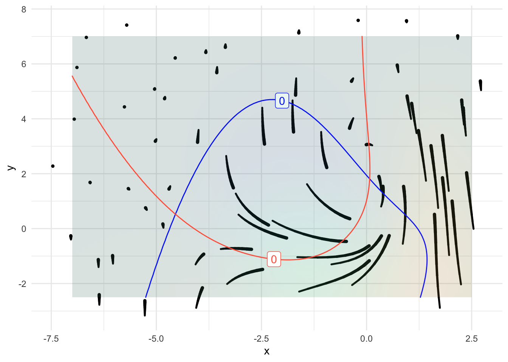
- Part 1
- Which is the \(x\)-nullcline?
f-g-202-1
- Part 2
- How many fixed points are in the domain shown in the graph?
f-g-202-2
- Part 3
- Which of these characterizes the eigenvalues of the linear flow near the rightmost fixed point?
f-g-202-3
- Part 4
- Which of these characterizes the eigenvalues of the linear flow near the leftmost fixed point?
f-g-202-4
Exercise 3 Figure 2 shows a flow field and some nullclines.
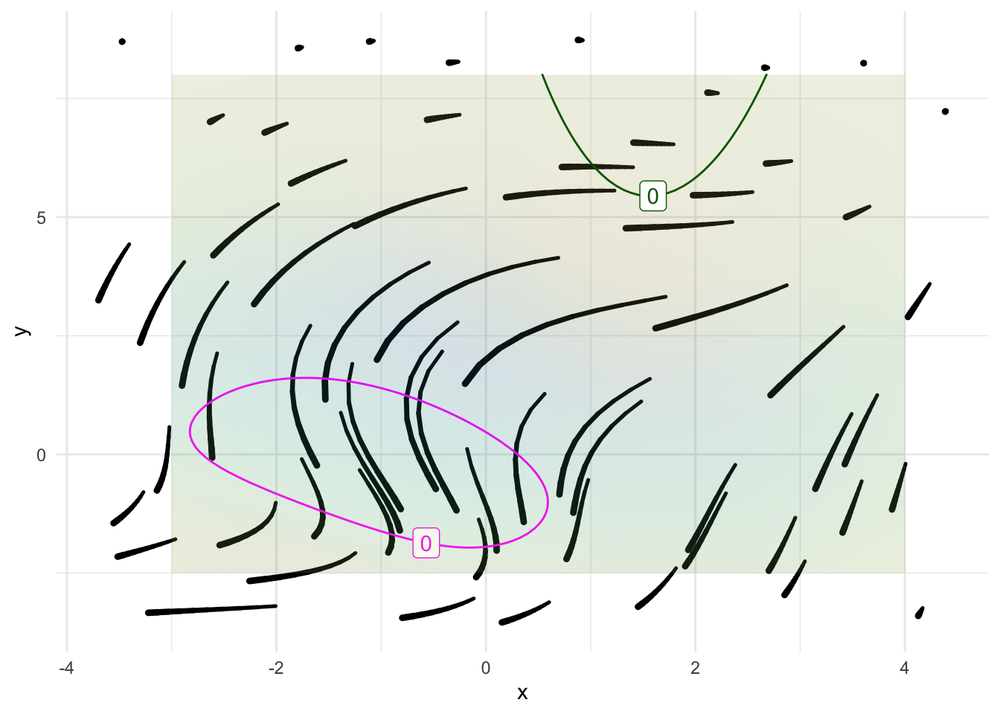
Are the flow and the nullclines shown in @#fig-f-g-203 plausibly from the same dynamical system? Explain what you see in the graph that leads you to your conclusion.
Answer
They match.
The flow shows no sign of converging to or diverging from a fixed point, so no fixed point is evident. This is consistent with their being no intersection of the two nullclines.
The flow crossing one of the nullclines is entirely vertical, the flow crossing the other is entirely horizontal.
..id..
Exercise 4 Figure 3 shows the nullclines for the flow and shows short trajectories from about 60 randomly selected initial conditions.
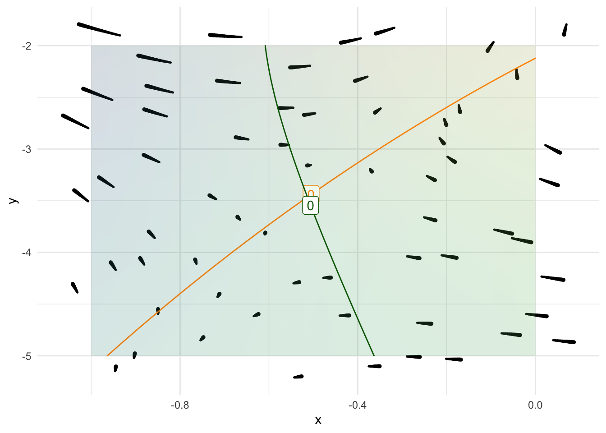
Which of these characterizes the eigenvalues of the linear flow near the fixed point?
brp-3-1
Exercise 5 We’re going to build a very simple model of romantic relationships. Naturally, most people are skeptical that math has much to do with romance, but you can judge for yourself whether the consequences of the simple model have any accord with the human condition.
Each relationship consists of two people. We’ll call them Romeo (R) and Juliet (J). The state of the relationship is the amount of love each person has for the other. Zero love corresponds to indifference. Negative love is dislike, even hatred when the negative value becomes extreme.
Instead of fixing on Shakespeare’s star-crossed lovers, we’ll imagine that there are different types of personalities, some positive, some negative. To set things up, we will look at different types of possible dynamics for Romeo’s love for Juliet. ?@fig-a-1-b-1 shows how Romeo’s love evolves as a function of his level of love/hate for Juliet and Juliet’s level of love/hate for Romeo.
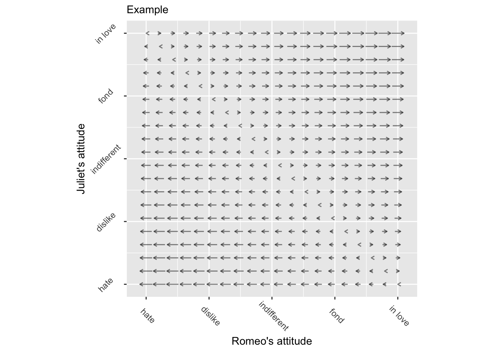
- Part 1
- In Figure 4, why are the flow arrows all horizontal?
a-1-b-1
- Part 2
- Romeo’s nullcline runs through the origin. What orientation does it have:
a-1-b-1-R-nullcline
- Part 3
- What can you say about Juliet’s nullcline?
a-1-b-1-J-nullcline
Let’s set a bit of vocabulary to describe possible personalities for Romeo.
- Stability (or not)
- Stable: Whatever Juliet’s affection for Romeo, Romeo will settle down to a fixed attitude to Juliet.
- Unstable: Whatever Juliet’s affection for Romeo, Romeo continues to move away from his starting position
- Mutual (or not)
- Reciprocal: If Juliet loves Romeo, Romeo in the end will love Juliet.
- Indifferent: Romeo doesn’t really care what Juliet thinks of him.
- Antagonistic: If Juliet loves Romeo, Romeo in the end will dislike Juliet. (Also sometimes known as “avoiding commitment.”)
Figure 5 shows four different personalities, corresponding to the four combinations
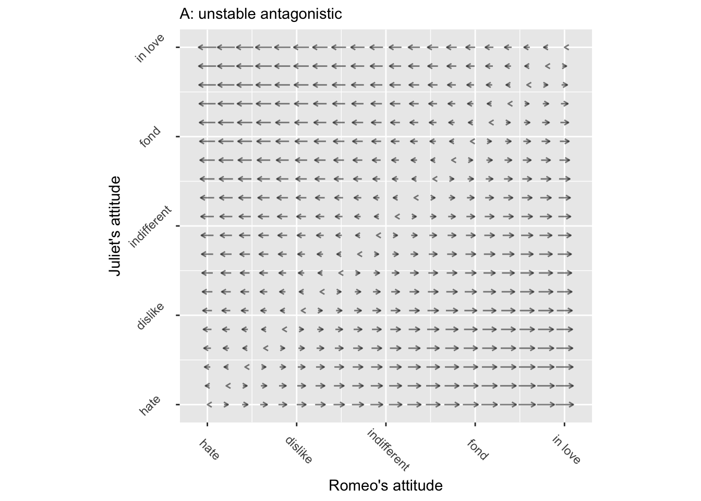
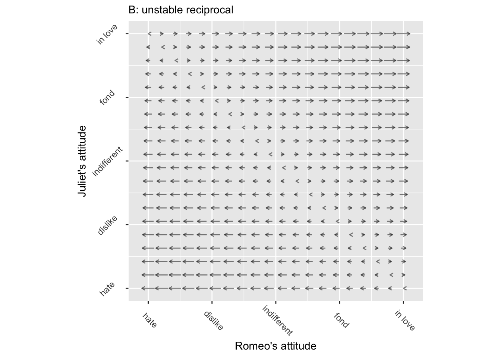
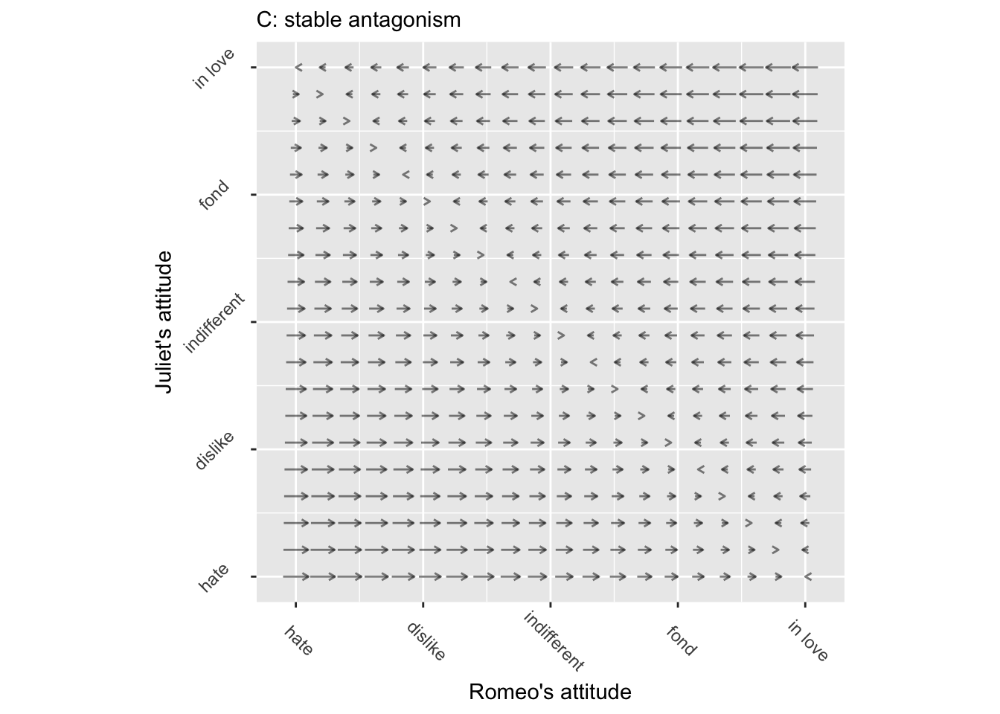
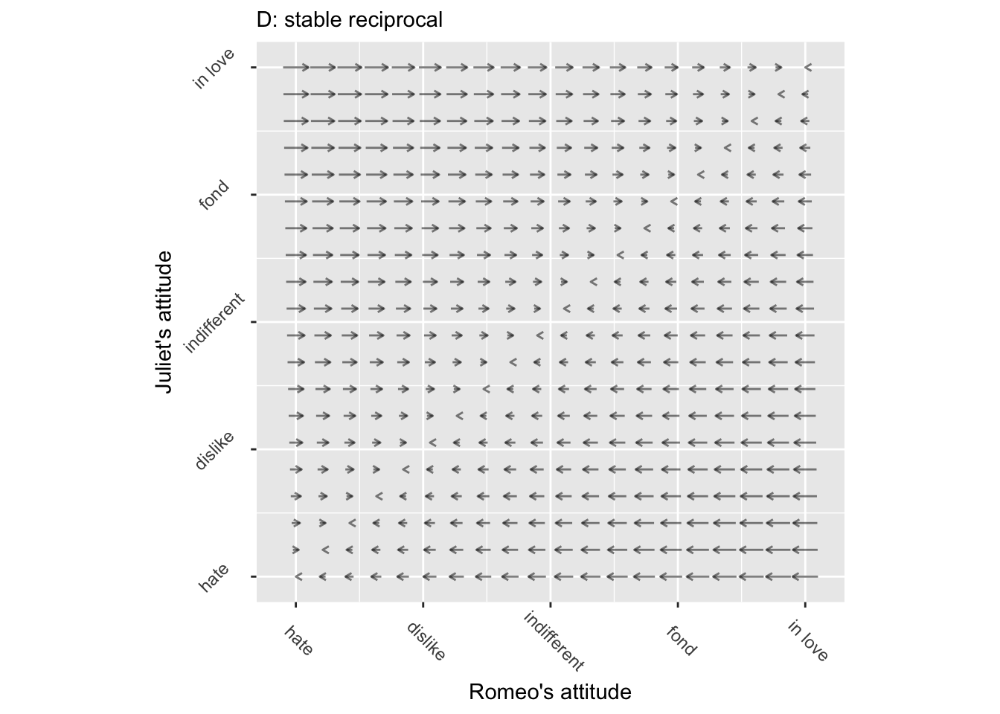
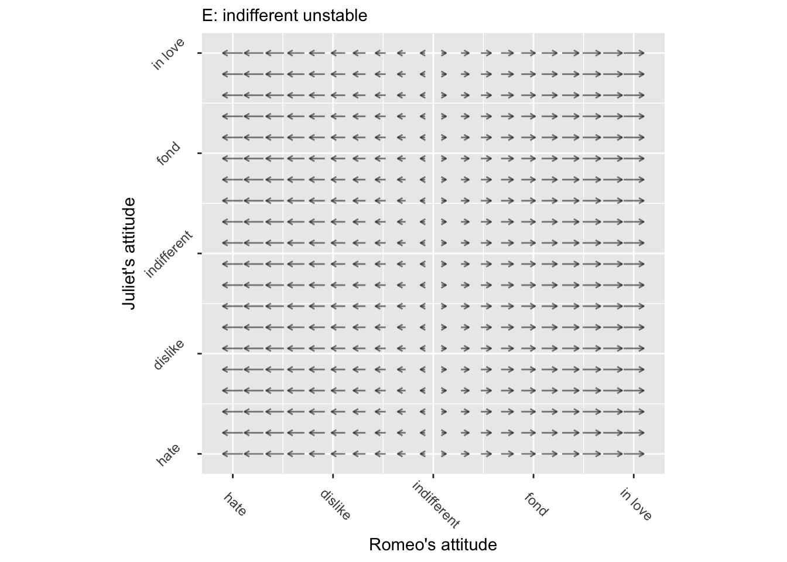
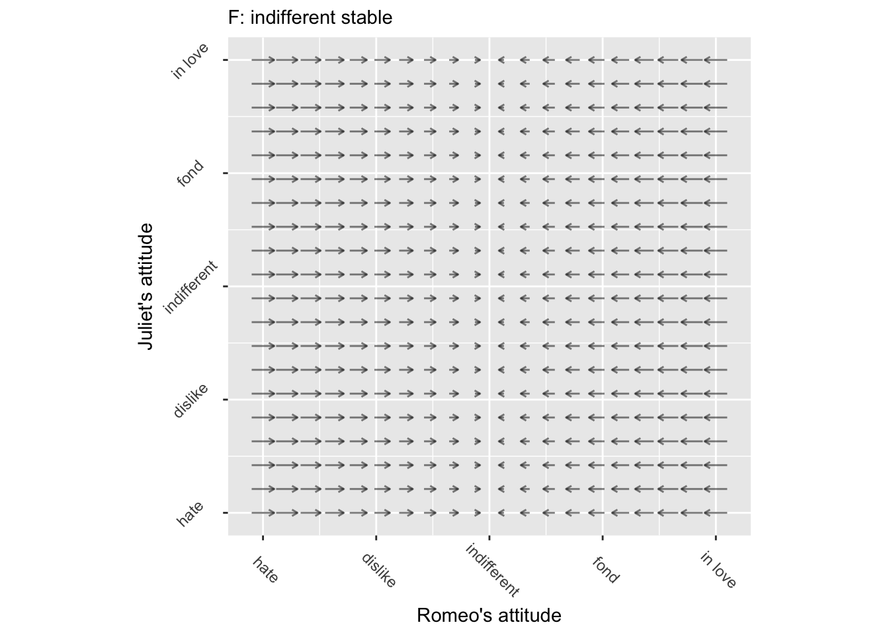
- Part 4
- Each of the six personality types in Figure 5 corresponds to a differential equation for Romeo’s love dynamics:
\(\partial_t R = \alpha R + \beta J\)
TASK: For each of the six, say whether the coefficients \(\alpha\) and \(\beta\) are negative, positive, or zero.
- Part 5
- So far, we’ve just been talking about personality types, using the role of Romeo as the case study. Naturally, Juliet has her own personality, potentially any of the six A-F we mapped out for Romeo.
It’s time to consider what happens when we combine the various personalities into a couple. Since there are six types of personalities, there are 36 different potential kinds of couples. Some of these may be destined to break up. Some may be destined to stay in love, or, be locked together in mutual hatred. And the outcome may depend on the initial condition: what Romeo’s and Juliet’s feelings are when they start out.
We could push the analogy still further and think about life’s happy and unhappy events—e.g. birth, sickness, infidelity—as moving the state to a new position.
To start, let’s look at what happens to couples who happen to have the same personality type.
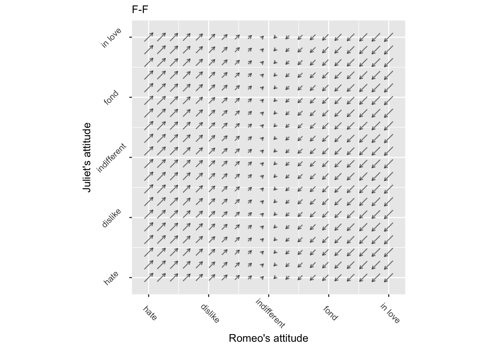
TASK: For each of the six types of matched personalities, sketch out come trajectories and characterize the dynamics as happy, unhappy, or tumultuous.
- Part 6
- Now let’s consider couples with personalities that are opposite in some sense. (After all, it’s said that opposites attract!) Figure 7 shows the four different kind of dynamics. Keep in mind that dynamics that flip the labels of the horizontal and vertical axes play out in exactly the same way. It’s just a matter of whom we call Juliet and whom we call Romeo.
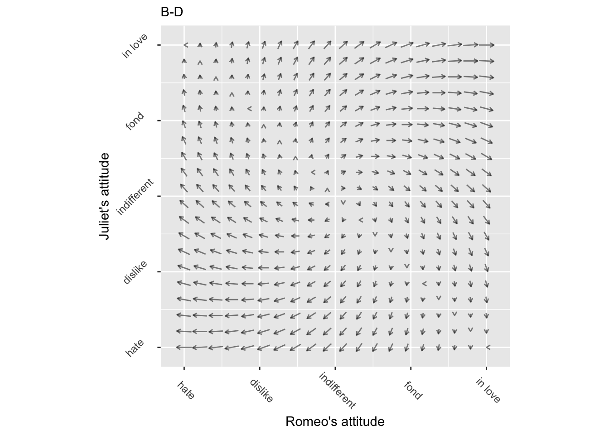
- Part 7
- For some couples, one person has a strong relationship and the other is quite passive. Let’s model those relationships. There are eight combinations, shown in Figure 8.
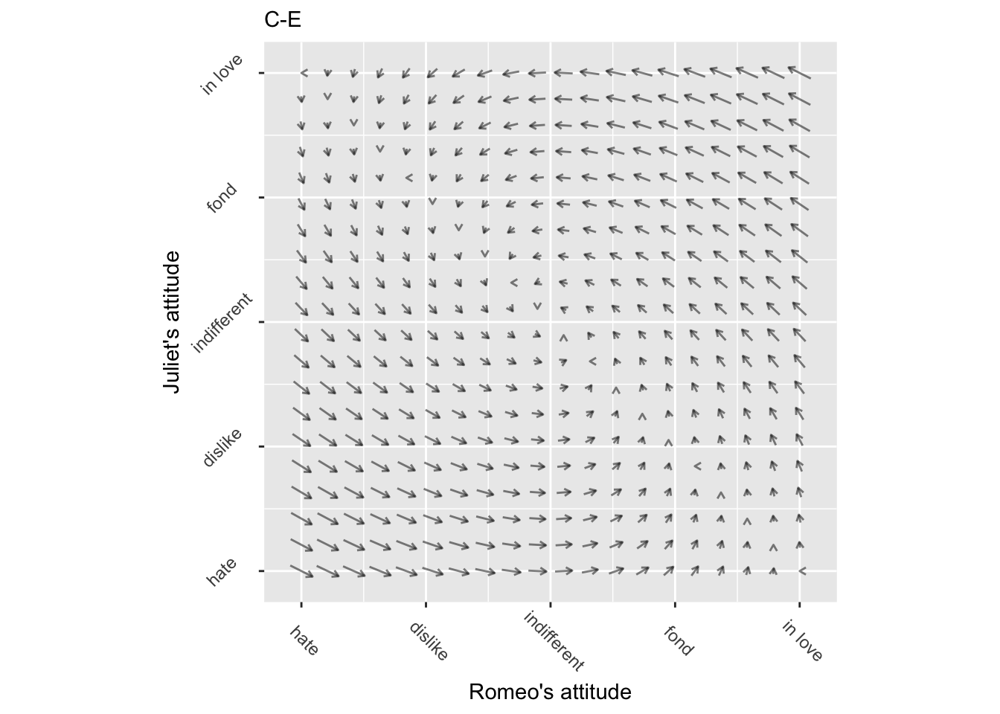
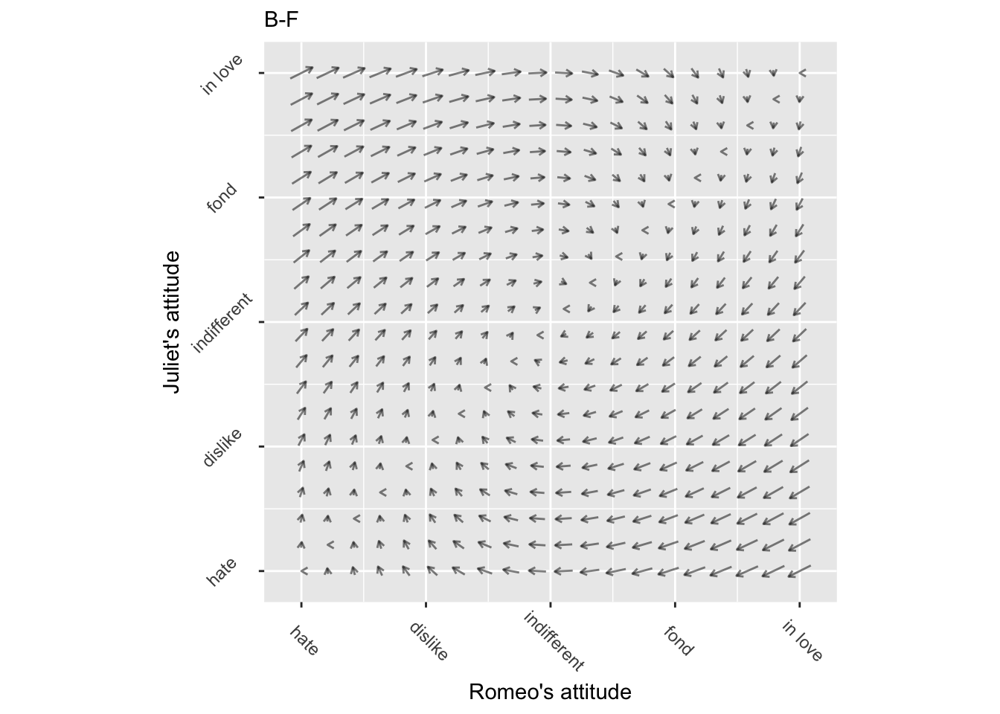
TASK: Characterize each of the eight strong-weak dynamics. Is the origin stable? Do the character’s feelings go up and down?
- Part 8
- What is “love at first sight” in terms of these dynamics: the flow or the initial condition?
Love at first sight positions the initial condition in the upper-right quadrant.